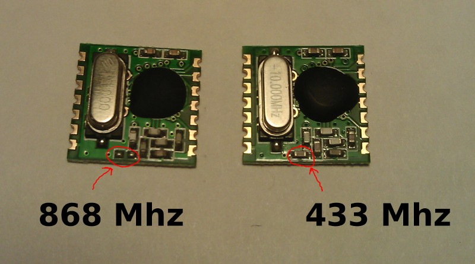

Got some distance issues with a couple of RFM12B's.
They communicate when they are on the desk next to each other. Put one in the room next door and nothing!
What can I check to try and diagnose the problem?
Archived Forum |
|
RFM12B signal issue need help.Submitted by StuntMonkeh on Wed, 16/01/2013 - 14:06Got some distance issues with a couple of RFM12B's. They communicate when they are on the desk next to each other. Put one in the room next door and nothing! What can I check to try and diagnose the problem? » |
Re: RFM12B signal issue need help.
The hardware is tuned for the one of the frequency bands. Are both hardware modules for the same frequency? Are you using the same frequency in software as the hardware?
Re: RFM12B signal issue need help.
Yes they should both be the same hardware frequency although one of the modules came pre-soldered so there is no way to check the frequency although the aerial is the correct length for the frequency.
They are both set to the same frequency in software. I have been using the 'RFM12B_Simple' sketches in the Openenergymonitor github repository.
The further I move the modules apart the more packets are dropped until they stop completely. I guess that is obvious but not when the point the packets stop arriving is when one of the modules is in the next room next door.
Re: RFM12B signal issue need help.
Have you subjected any of the modules to 5V? I did that once and while the module still worked, range was very poor.
Re: RFM12B signal issue need help.
I don't think I have. One module came pre-soldered and the other is on a Jeelabs RFM12B breakout board which drops the 5v.
I have got a couple of jeenodes on order. Hopefully when they arrive I can try and pin down which of my modules is at fault.
Re: RFM12B signal issue need help.
I reckon everyone here should keep a JeeLink in their toolbox. Brilliant for debugging stuff like this! And loads of other RFM12B problems too. Oh, and it also means you cab monitor your emontx from your PC!
P.
Re: RFM12B signal issue need help.
Apologies for the dumb question, but I'm wondering what one might use a JeeLink for, apart from turning the blue LED on and off. I think I'm OK with the terms RFM12B, RFM12B board and JeeNode, and I understand that an emonTx has an RFM12B unit on board. Lots of new terms to get to grips with.
I've just being trying to mount an RFM12B onto stripboard only to find that the pin spacing is tighter than 0.1". What a pain!
Re: RFM12B signal issue need help.
I've just being trying to mount an RFM12B onto stripboard only to find that the pin spacing is tighter than 0.1". What a pain!
Just get an emonTx or RFM12Pi bare PCB from the shop. They are only £3/£2.50 and will save you a lot of hassle.
Re: RFM12B signal issue need help.
I'm wondering what one might use a JeeLink for
Robin, It's a great little device - a bit like a USB memory stick, but inside there's (effectively) an arduino and an RFM12B.
Great for running little test sketches to check radio reception - you just plug it into the side of a laptop and walk around the house finding where you can and can't get reception. It's just so much more neat and convenient than a conventional setup.
P.
Re: RFM12B signal issue need help.
Thanks, Paul, I'll bear that in mind.
I'm just about to try out my first attempt at an RF comms link with a Uno + RFM12B as Tx, and a sub-equipped emonTx as Rx.
Reception to the other side of the room would do me fine at this stage, and no blue smoke!
Re: RFM12B signal issue need help.
Robin, It's a great little device - a bit like a USB memory stick, but inside there's (effectively) an arduino and an RFM12B.
I can only underline that! It is a great help to solve that chicken and egg problem (if you have two RF nodes and don't get communication running, then you never know if it's a reception or transmission problem).
BR, Jörg.
Re: RFM12B signal issue need help.
I actually have a spare RF unit. So if I wire that one up as well, hopefully two out of three will work!
Re: RFM12B signal issue need help.
I'm dealing with a similar reception issue. I'm experiencing a lot of failed packets. Or at least I think it's a lot. What is the normal fail rate? During say a two minute period (with the emonTx sending every 10 seconds, plus a GLCD, and a base) I am getting about 50% of the packets failing the crc and therefore being dropped. Is that high? Any suggestions for improving that?
Additionally, has anyone modified things so that they can log failed packets to emonCMS so that we can graph the fail rates. It's currently hard to tell and I think it would be handy to be able to get a notification if the update rate falls below a certain threshold. Do any of the input filters deal with time in a way that I could log average updates or else mod to log failed crc. I realize this would require updating my NanodeRf sketch.
Any suggestions for improving or testing range and accuracy. My emonTx is one floor below me (and two rooms over) but it's a wood floor so I'm surprised I'm loosing so many packets. Is it worth trying to mess around with the frequency?
Thanks for an reception advice that can be offered!
Re: RFM12B signal issue need help.
What sort of base do you have? You did say on the other thread that you've got the updated JeeLib?
Have a look at what MartinR has been doing here: http://openenergymonitor.org/emon/node/2395
I'm not suggesting you need to go out and buy an emonGLCD just for this purpose, but a temporary modification might not be amiss.
Re: RFM12B signal issue need help.
It might be worth checking that the two rfm12 modules have the same hardware frequencies, I thought I had uploaded a picture of how to check the module frequency to the documentation before but could not find it, so have just added one here:
http://openenergymonitor.org/emon/buildingblocks/rfm12b-wireless
Includes additional capacitor = 433 Mhz
Missing capactior = 868 Mhz

Did you buy the modules from the openenergymonitor shop? If they are different let me know you order number and I will look into it.
Re: RFM12B signal issue need help.
Thanks. I did buy them all from the openenergymonitor shop and from the ones I can see right now, they are all 433 MHz. I love the GLCD signal strength monitor. Since I have a spare GLCD sitting here, I'll get to work on one and see what I can see. Thanks!